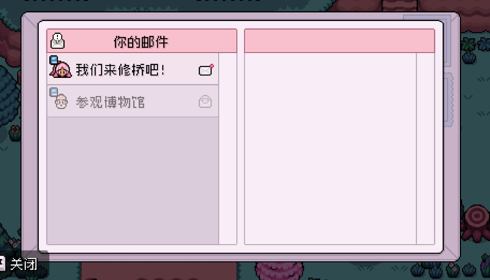

Quick answers
- Remove out-of-season crops.
- Buy a small fall seed mix.
- Forage list changes—walk old routes with new eyes.
- Town projects may still want materials.
- Do not over-clear for aesthetics before energy is stable.
Fall flip
Treat it like summer start. Our priority stayed: waterable income, then mines/fish with leftover bars.
Winter thought
If your version gets harsher winters, keep a small cash and snack buffer going into the last weeks of fall.
Safe to skip
- Completing every collection the week seasons change
Screenshots from our save
Real Fields of Mistria shots from our first-season play. Captions in English; in-game UI language may differ.




FAQ
I am not in fall yet?
Bookmark this page; the checklist still applies at the flip.
Same crops as summer?
No—buy season-tagged seeds only.
Unofficial fan guide. Not affiliated with NPC Studio. Verify details in your game version.